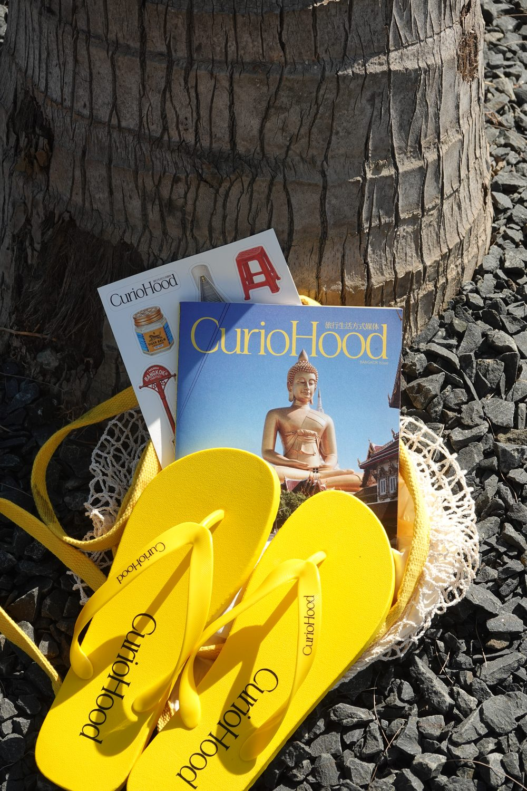
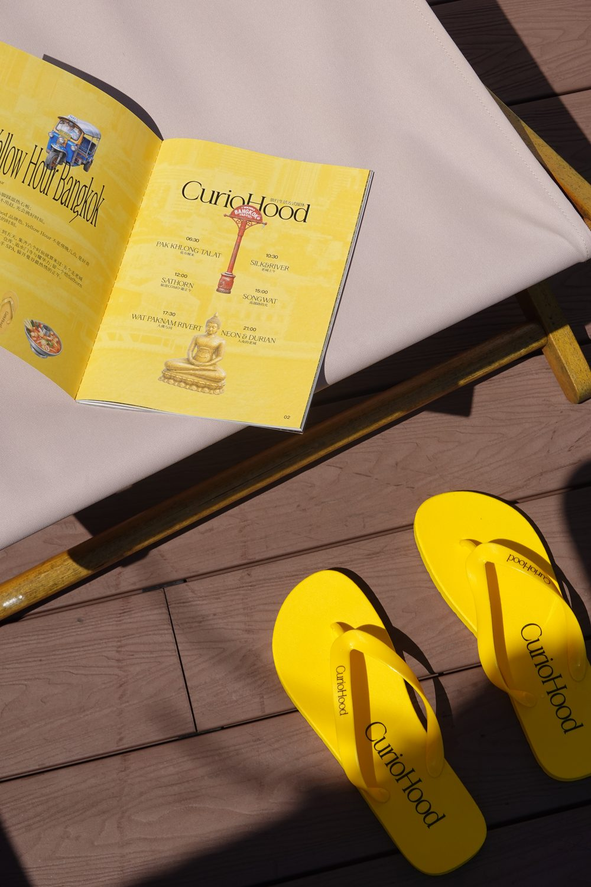
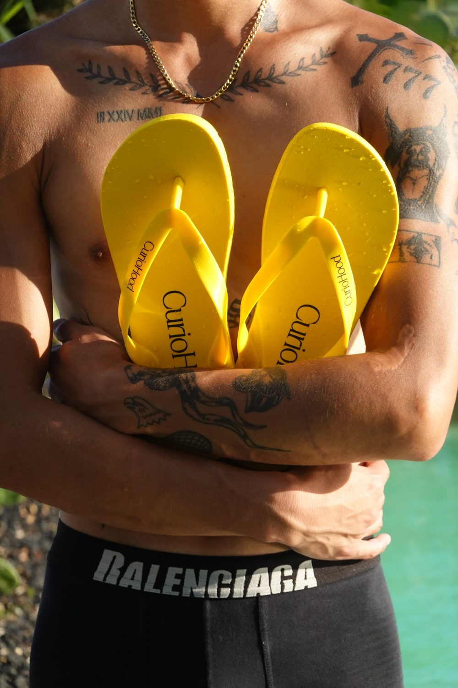
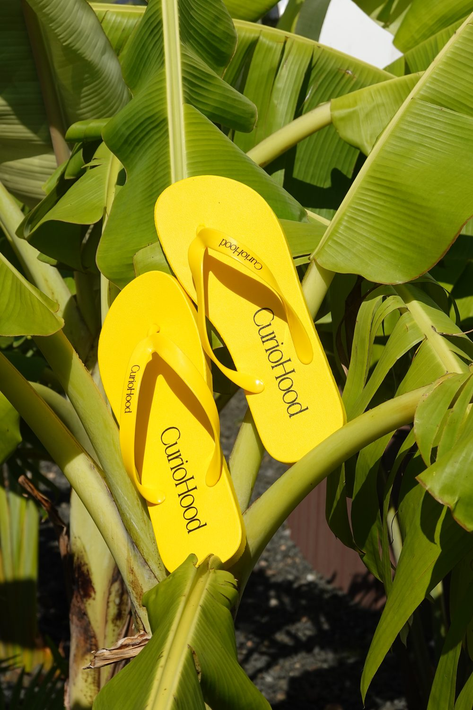
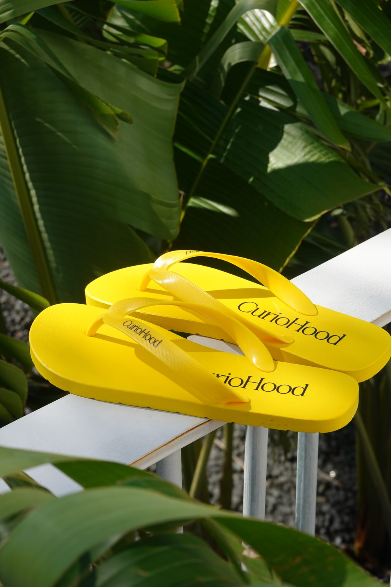
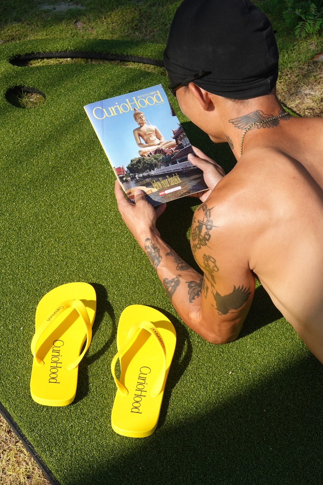

Yellow Hour 开始于一个很小的念头：在曼谷，只挑光线最好的那段时间出门。
后来它成了一条 4 天 5 晚的路线，又被装订成一本 ZINE。这一次，我们把它做成了三样能拿在手里的东西。路线会过时，东西不会。

一本 ZINE：路线的纸质版
A5 的开本，骑马钉装订，翻页的手感和曼谷的节奏是配的：快，但不乱。
里面是那条路线的完整版，按 hour 分章。哪个小时去河边，哪个小时躲进商场吹空调，哪个小时留给街边的一碗船面，翻开对应的一页就有答案。看完可以照着再去一次，也可以只把它当一本曼谷画册。

一双人字拖：黄得很坚决
拖鞋只做了一个颜色。不是接近黄的黄，是 Yellow Hour 里那个 hour 的黄，阳光最足的时候马路反光的黄。
鞋面上没有图案，只有一行 CurioHood。它不需要讲故事，穿上去自然就有了：泳池边、草坪上、芭蕉叶底下，都拍过，都成立。



一套贴纸：把路线里的梗带在身上
贴纸上的东西，走过那条路线的人都认识：tuk-tuk、红色塑料凳、船面、大皇宫的金顶。它们是曼谷的日常，也是 ZINE 里出现过的角色。
贴行李箱、贴水壶、贴电脑。贴在哪里不重要，重要的是有人问起的时候，你可以顺便推荐一条路线。
一套东西，三种用法
在家，它是下午三点的那个 hour：草坪、阳光、一本翻开的 ZINE。
在曼谷，它是路线的随身版：白天用 ZINE 认路，晚上拖鞋上岗，贴纸负责记录战利品。
送人，它是一整套关于"慢一点旅行"的提议。比伴手礼重一点，比攻略轻很多。

路线会带你去曼谷。这三样东西，负责让你记得去过。
curiohood · Stay Curious
事实核对：ZINE 规格（A5、骑马钉）与产品构成（人字拖、贴纸）据 curiohood 产品实物；文中路线背景见《BANGKOK YELLOW HOUR：4 天 5 晚，走一条不赶时间的路线》。